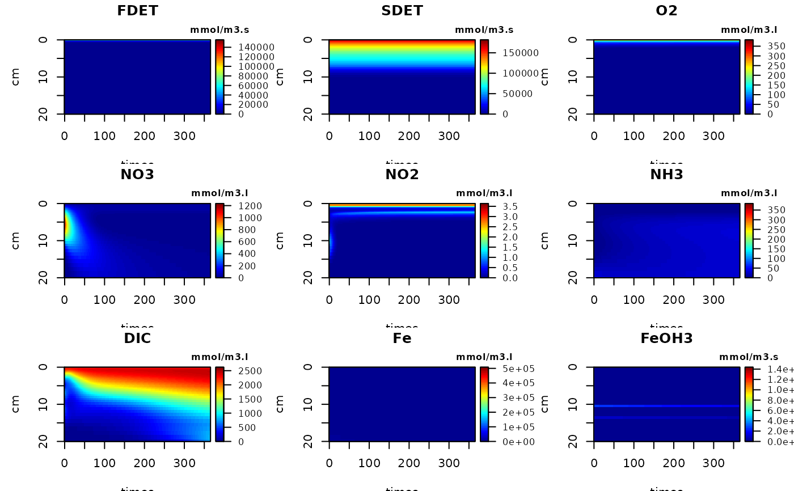
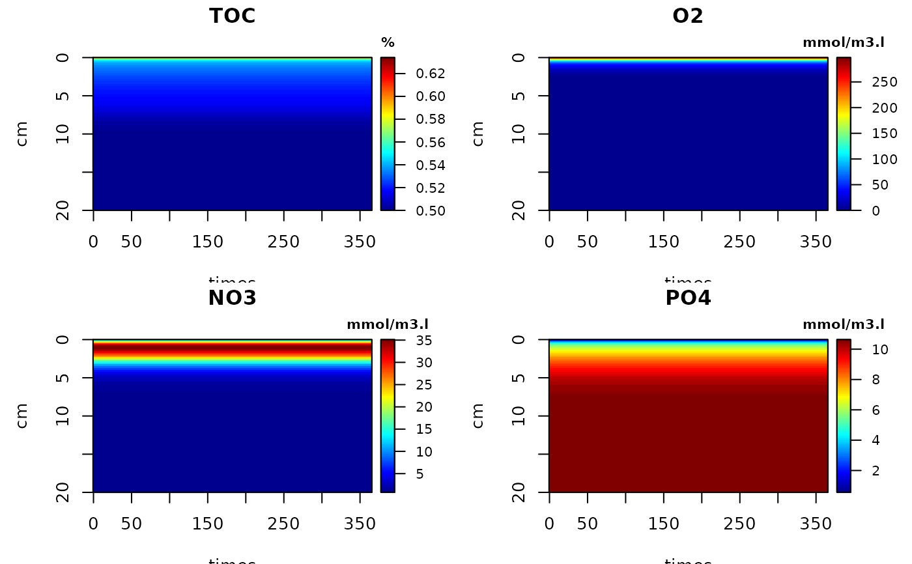
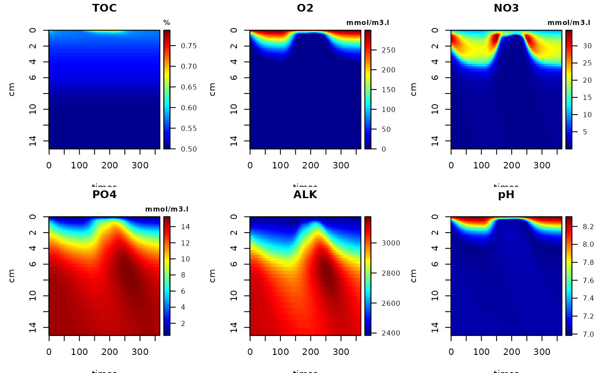
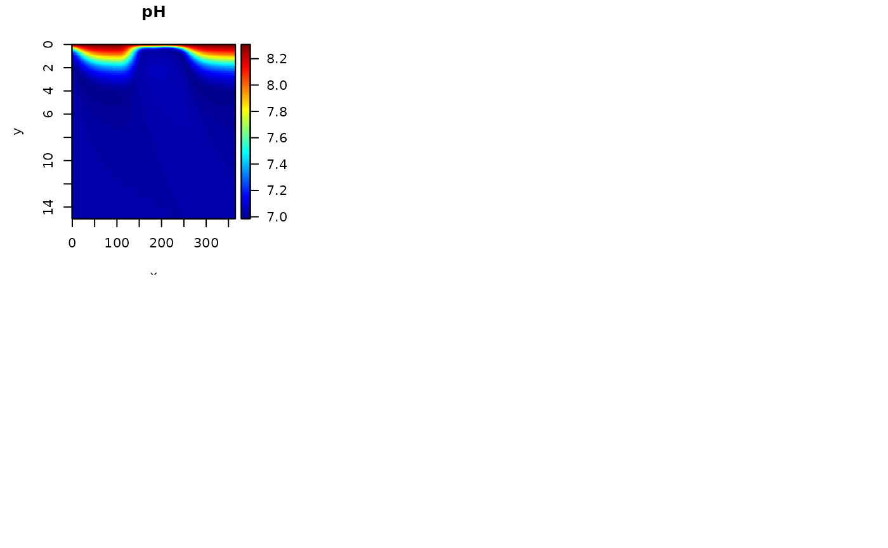
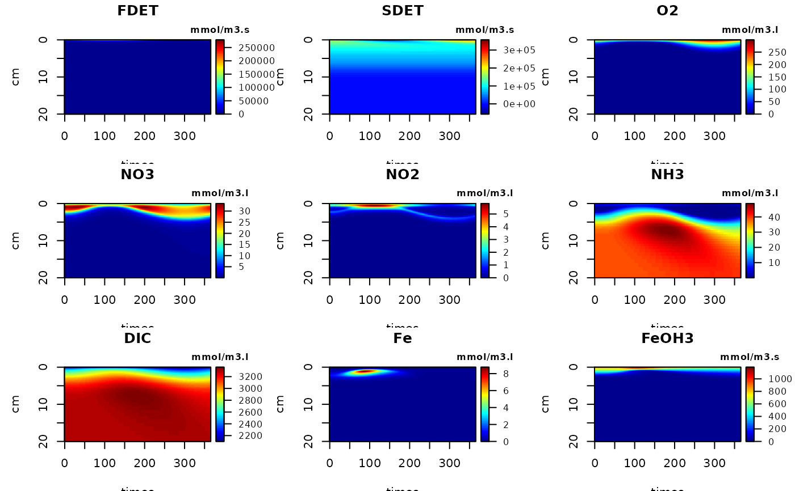
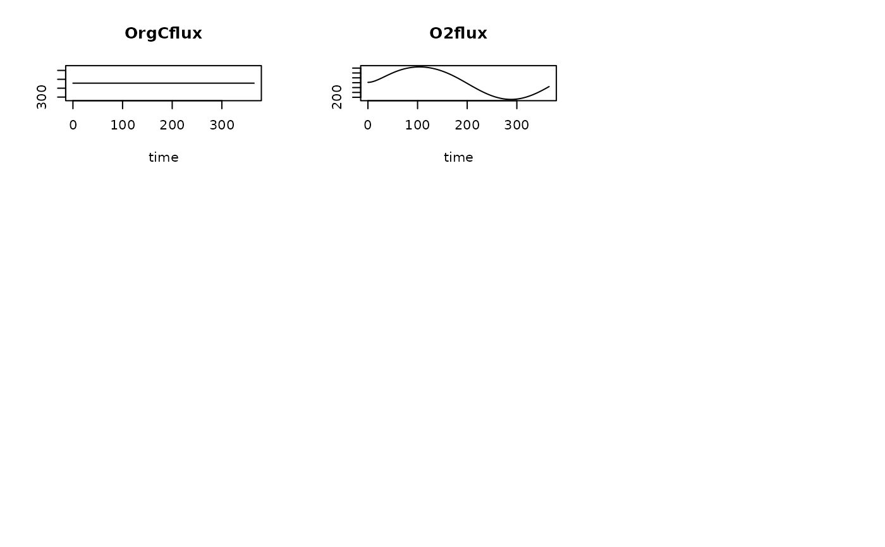
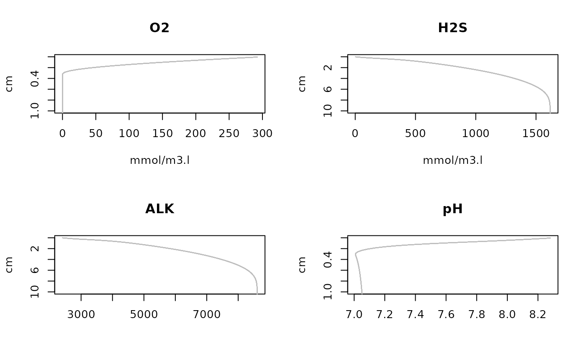
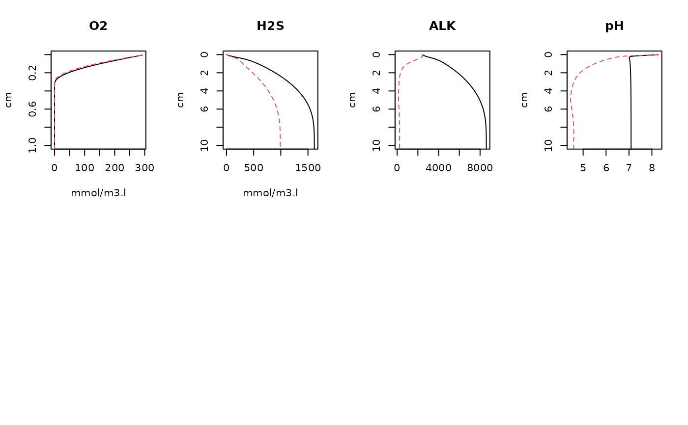
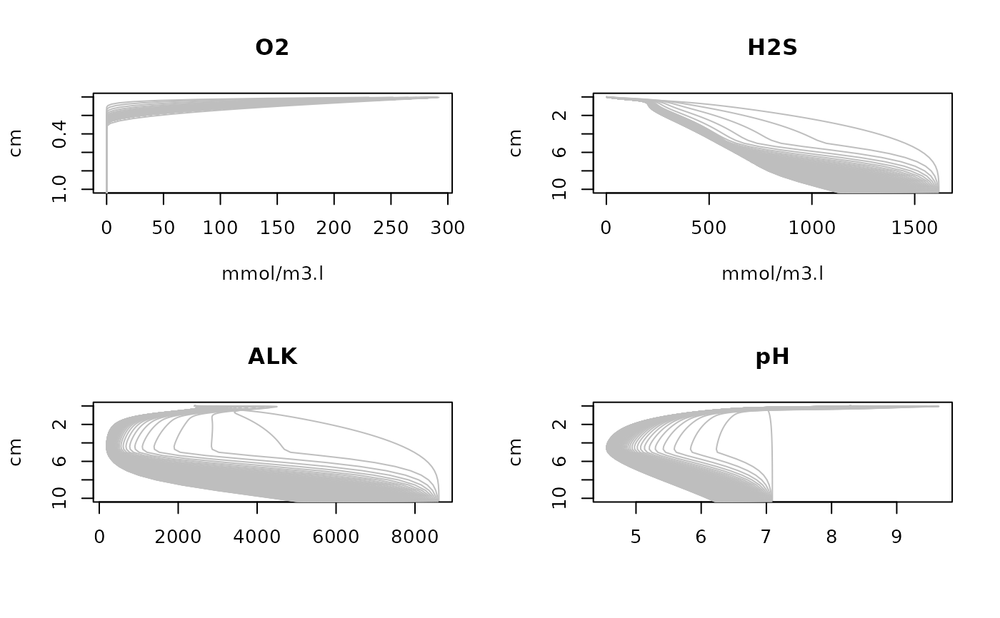
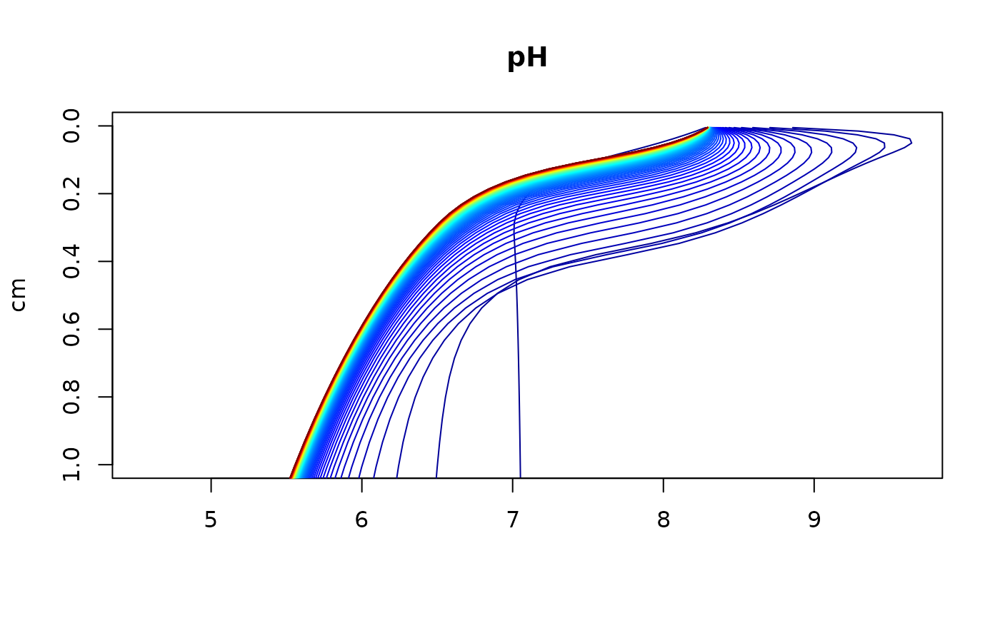

Dynamic solution of the FESDIA model, calculating C, N, P, O2, Fe and S dynamics in the sediment.
FESDIAdyna.RdFESDIAdyna dynamically runs the FESDIA model; pH can be calculated afterwards, ie ignoring carbonate dynamics.
Usage
FESDIAdyna (parms = list(), times = 0:365, spinup = NULL, yini = NULL,
gridtype = 1, Grid = NULL, porosity = NULL, bioturbation = NULL,
irrigation = NULL, surface = NULL, diffusionfactor = NULL,
dynamicbottomwater = FALSE,
CfluxForc = NULL,FeOH3fluxForc = NULL, CaPfluxForc = NULL,
O2bwForc = NULL, NO3bwForc = NULL, NO2bwForc = NULL,
NH3bwForc = NULL, FebwForc = NULL, H2SbwForc = NULL,
SO4bwForc = NULL, CH4bwForc = NULL, PO4bwForc = NULL,
DICbwForc = NULL, ALKbwForc = NULL, wForc = NULL,
biotForc = NULL, irrForc = NULL, rFastForc = NULL,
rSlowForc = NULL, pFastForc = NULL, MPBprodForc= NULL,
gasfluxForc = NULL, HwaterForc = NULL, ratefactor = NULL,
calcpH = FALSE, verbose = FALSE, ...)Arguments
- parms
A list with parameter values.Available parameters can be listed using function FESDIAparms.
See details of FESDIAparms.
- times
Output times for the dynamic run
- spinup
Spinput times for the dynamic run; not used for output; the outputted simulation starts from the final values of the spinup run.
- CfluxForc, FeOH3fluxForc, CaPfluxForc
NULLor a list, detailing the forcing function for the deposition fluxes of organic carbon, FeP and CaP. IfNULLthen the corresponding parameter value (Cflux, FeOH3flux, CaPflux) is used. If alist, it should contain either a data time series (list(data = )) or parameters determining the periodicity of the seasonal signal (defined aslist(data = NULL, amp = 0, period = 365, phase = 0, pow = 1, min = 0). see details.- O2bwForc, NO3bwForc, NO2bwForc, NH3bwForc, CH4bwForc, FebwForc, SO4bwForc, H2SbwForc, PO4bwForc, DICbwForc, ALKbwForc
NULLor a list, detailing the forcing function for the boundary concentrations. IfNULLthen the corresponding parameter value (O2bw, NO3bw, NO2bw, NH3bw, CH4bw, Febw, SO4bw, H2Sbw, PO4bw, DICbw, ALKbw) is used. If alist, it should contain either a data time series (list(data = )) or parameters determining the periodicity of the seasonal signal (defined aslist(data = NULL, amp = 0, period = 365, phase = 0, pow = 1, min = 0). see details.- wForc, biotForc, irrForc
NULLor a list, detailing the forcing function forthe advection, bioturbation and irrigation rates (units of cm/d, cm2/d and /d). IfNULLthen the corresponding parameter value (w, biot, irr) is used. If alist, it should contain either a data time series (list(data = )) or parameters determining the periodicity of the seasonal signal (defined aslist(data = NULL, amp = 0, period = 365, phase = 0, pow = 1, min = 0). see details.- rFastForc, rSlowForc, pFastForc
NULLor a list, detailing the forcing function for the decay rate of fast and slow detritus, and the fraction of fast detritus in organic flux (units of /d, /d, -). IfNULLthen the corresponding parameter value (rFast, rSlow, pFast) is used. If alist, it should contain either a data time series (list(data = )) or parameters determining the periodicity of the seasonal signal (defined aslist(data = NULL, amp = 0, period = 365, phase = 0, pow = 1, min = 0). see details.- MPBprodForc
NULLor a list, detailing the forcing function for the maximal microphytobenthos production rate (units of mmolO2/m3/d). IfNULLthen the corresponding parameter value (MPBprod) is used. If alist, it should contain either a data time series (list(data = )) or parameters determining the periodicity of the seasonal signal (defined aslist(data = NULL, amp = 0, period = 365, phase = 0, pow = 1, min = 0). see details.- gasfluxForc
NULLor a list, detailing the forcing function for the intensity of exchange with the air (units of cm/d). IfNULLthen the corresponding parameter value (gasflux) is used. If alist, it should contain either a data time series (list(data = )) or parameters determining the periodicity of the seasonal signal (defined aslist(data = NULL, amp = 0, period = 365, phase = 0, pow = 1, min = 0). see details. A gasflux>0 represents exchange rate for O2 and DIC, not for other dissolved substances. There can still be deposition of C, FeP and CaP.- HwaterForc
NULLor a list, detailing the forcing function for the height of the water above the sediment - ifdynamicbottomwater= TRUE. IfNULLthen the corresponding parameter value (Hwater) is used. If alist, it should contain either a data time series (list(data = )) or parameters determining the periodicity of the seasonal signal (defined aslist(data = NULL, amp = 0, period = 365, phase = 0, pow = 1, min = 0). see details.- ratefactor
NULLor a list, detailing the forcing function for the biogeochemical rate multiplication factor. If not specified (orNULL), then it is assumed to be 1 and constant. If alist, it should contain either a data time series (list(data = )) or parameters determining the periodicity of the seasonal signal (defined aslist(data = NULL, amp = 0, period = 365, phase = 0, pow = 1, min = 0). see details.- dynamicbottomwater
If
TRUE, then the concentrations in the water overlying the sediment will also be dynamically described, and with water height equal toHwater. Note that this will slow down the simulation.- gridtype
Type of grid:
1for cartesian,2for cylindrical,3for spherical.- Grid
If specified: either an object, as returned by
setup.grid.1Dfrom the packageReacTran, a vector of length 101 with the transport distances (from mid to mid of layers, upper interface = diffusive boundary layer), or one number with the constant layer thickness. IfNULL, it is defined assetup.grid.1D(x.up = 0, dx.1 = 0.01, N = 100, L = 100), i.e. the total length is 100 cm, the first layer is 0.01 cm thick and layers are increasing with depth for 100 layers.- porosity
If specified, either an object with porosities ([-]) as returned by
setup.prop.1Dfrom the packageReacTran, a vector of length 101 with the porosities defined at the layer interfaces, or one number with the constant porosity. IfNULL, it is defined by the parameterspor0,pordeepandporcoeffas:(pordeep + (por0 - pordeep) * exp(-pmax(0, x.int)/porcoeff)), wherex.intis the distance, from the surface of the layer interface. Note that the porosity values should be consistent with theGrid- and should be inbetween 0 and 1.- bioturbation
If specified, either an object with bioturbation rates (units [cm2/d]) as returned by
setup.prop.1Dfrom the packageReacTran, a vector of length 101 with the bioturbation defined at the layer interfaces, or one number with the constant bioturbation. IfNULL, it is defined by the parametersbiot,biotdepthandbiotattas:biot * exp(-pmax(0, (x.int-biotdpeth))/biotatt), wherex.intis the distance, from the surface of the layer interface. Note that the bioturbation values should be consistent with theGrid.- irrigation
If specified, either an object with irrigation rates (units [/d]) as returned by
setup.prop.1Dfrom the packageReacTran, a vector of length 100 with the irrigation rates defined at the layer centres, or one number with the constant rates. IfNULL, it is defined by the parametersirr,irrdepthandirrattas:irr * exp(-pmax(0, (x-irrdepth)/irratt)), wherexis the distance, from the surface, of the layer centres. Note that the irrigation values should be consistent with theGrid.- surface
If specified, either an object with surface areas (units [cm2]) as returned by
setup.prop.1Dfrom the packageReacTran, a vector of length 101 with the surface areas defined at the layer interfaces, or one number with the constant surface area. IfNULL, it is defined by the parametergridtype, and theGridas:surface = 1forgridtype == 1,surface = rev(2*pi*Grid$x.int)forgridtype == 2andsurface = rev(pi*(Grid$x.int)^2)forgridtype == 3.Note that the surface values should be consistent with the
Grid.- diffusionfactor
The multiplication factor necessary to go from molecular diffusion to effective sediment diffusion, i.e. that takes into account tortuosity. If specified, either an object with these factors ([-]) as returned by
setup.prop.1Dfrom the packageReacTran, a vector of length 101 with these factors defined at the layer interfaces, or one number with the constant factor. IfNULL, it is set equal to the porosity. Note that the factors should be consistent with theGrid.- yini
The condition at which to inialise the dynamic simulation, i.e. a vector or matrix, with the values of
FDET, SDET,O2, NO3, NO2,NH3, DIC, Fe,FeOH3, H2S, SO4,CH4, PO4, FeP, CaP, Pads, ALK, each in 100 layers, and in that order. IfNULL, the default, then the steady-state solution based on the mean forcing is used (and obtained with FESDIAsolve) .- calcpH
if TRUE, the pH will be calculated - note that this will not include the effects of calcium carbonate precipitation or dissolution on pH . Note also that the pH can be estimated afterwards by running FESDIApH. See examples.
- verbose
If TRUE, will write progession to the screen .
- ...
Any argument passed to the dynamic solver (ode.1D[deSolve])
Value
A matrix of class FESDIAdyn or PHDIAdyn and deSolve, as generated by the solver from R-package deSolve (ode.1D).
It contains several output columns, the first is time. The meaning and units of these columns can be assessed via the R-functions:
FESDIAsvar(), FESDIA1D(), FESDIA0D(). See FESDIA0D.
Details
Several parameters can also be described as forcing functions. They are, for FESDIAdyna:
Cflux, FeOH3flux, CaPflux, O2bw, NO3bw, NO2bw, NH3bw, Febw, H2Sbw,
SO4bw, CH4bw, PO4bw, DICbw, ALKbw, w, biot, irr,
rFast, rSlow, pFast, MPBprod, gasflux, Hwater.
The forcing functions are prescribed as a list that either contains a data series or specifies a periodic signal.
The list is defined as: list(data = NULL, amp = 0, period = 365, phase = 0, pow = 1, min = 0)
Forcing functions imposed by a data series are set with item
data, and contains a time series to replace the parameter.datashould be a two-columned matrix with times (first column) and values (second column). The values should be in the same units as the parameters.The time series should embrace both arguments
timesandspinup.if a periodic signal, the list should contain
amp, period, phase, powandmin: parameters determining the periodicity of the seasonal signal, and in the same units as the parameters. From this the forcing function time series is estimated, e.g. forCfluxForcas follows: CfluxForc =max(min, Cflux*(1 + (amp*sin((times-phase)/period*2*pi))^pow), whereCfluxis the parameter value. Used only ifdataisNULL. Ifamp= 0, orpow= 0, then the forcing will be kept constant and equal to the parameter value.
Note
The model application starts by estimating the steady-state condition of the model. This steady-state condition is then used as a starting condition for a dynamic simulation, with sinusoidal forcing of organic carbon deposition flux (truncated to be >= 0).
If only one year is run, the dynamic run is likely not at equilibrium with the transient forcing.
References
Soetaert K, PMJ Herman and JJ Middelburg, 1996a. A model of early diagenetic processes from the shelf to abyssal depths. Geochimica Cosmochimica Acta, 60(6):1019-1040.
Soetaert K, PMJ Herman and JJ Middelburg, 1996b. Dynamic response of deep-sea sediments to seasonal variation: a model. Limnol. Oceanogr. 41(8): 1651-1668.
Examples
#===========================================
# Show parameter values
#===========================================
FESDIAparms()
#> parms units
#> Cflux 4.566210e+02 nmolC/cm2/d
#> pFast 9.000000e-01 -
#> FeOH3flux 1.000000e+00 nmol/cm2/d
#> CaPflux 0.000000e+00 nmol/cm2/d
#> rFast 6.849315e-02 /d
#> rSlow 1.369863e-04 /d
#> NCrFdet 1.509434e-01 molN/molC
#> NCrSdet 1.509434e-01 molN/molC
#> PCrFdet 9.433962e-03 molP/molC
#> PCrSdet 9.433962e-03 molP/molC
#> BCupLiq 2.000000e+00 -
#> BCdownLiq 3.000000e+00 -
#> O2bw 3.000000e+02 mmol/m3
#> NO3bw 1.000000e+01 mmol/m3
#> NO2bw 0.000000e+00 mmol/m3
#> NH3bw 1.000000e+00 mmol/m3
#> CH4bw 0.000000e+00 mmol/m3
#> PO4bw 5.000000e-01 mmol/m3
#> DICbw 2.100000e+03 mmol/m3
#> Febw 0.000000e+00 mmol/m3
#> H2Sbw 0.000000e+00 mmol/m3
#> SO4bw 3.100000e+04 mmol/m3
#> ALKbw 2.400000e+03 mmol/m3
#> Mnbw 0.000000e+00 mmol/m3
#> O2dw NA mmol/m3
#> NO3dw NA mmol/m3
#> NO2dw NA mmol/m3
#> NH3dw NA mmol/m3
#> CH4dw NA mmol/m3
#> PO4dw NA mmol/m3
#> DICdw NA mmol/m3
#> Fedw NA mmol/m3
#> H2Sdw NA mmol/m3
#> SO4dw NA mmol/m3
#> ALKdw NA mmol/m3
#> Mndw NA mmol/m3
#> w 2.739726e-06 cm/d
#> biot 2.739726e-03 cm2/d
#> biotdepth 5.000000e+00 cm
#> biotatt 1.000000e+00 /cm
#> irr 0.000000e+00 /d
#> irrdepth 5.000000e+00 cm
#> irratt 1.000000e+00 cm
#> gasflux 0.000000e+00 cm/d
#> NH3Ads 1.300000e+00 -
#> rnitri1 2.000000e+01 /d
#> rnitri2 2.000000e+01 /d
#> ranammox 1.000000e-01 /(mmol/m3)/d
#> ksO2nitri 1.000000e+00 mmolO2/m3
#> ksO2oxic 3.000000e+00 mmolO2/m3
#> ksNO3denit 3.000000e+01 mmolNO3/m3
#> kinO2denit 1.000000e+00 mmolO2/m3
#> kinNO3anox 1.000000e+00 mmolNO3/m3
#> kinO2anox 1.000000e-03 mmolO2/m3
#> temperature 1.000000e+01 dgC
#> salinity 3.500000e+01 psu
#> TOC0 5.000000e-01 %
#> rFePadsorp 1.000000e-06 /d
#> rCaPprod 0.000000e+00 /d
#> rCaPdiss 0.000000e+00 /d
#> CPrCaP 2.869565e-01 mol/mol
#> rPads 0.000000e+00 /d
#> rPdes 0.000000e+00 /d
#> maxPads 1.000000e+03 mmolP/m3solid
#> ksFeOH3 1.250000e+04 mmolFeOH3/m3
#> kinFeOH3 1.250000e+04 mmolFeOH3/m3
#> ksSO4BSR 1.600000e+03 mmolS/m3
#> kinSO4Met 1.000000e+03 mmolS/m3
#> rFeox 3.000000e-01 /(mmol/m3)/d
#> rH2Sox 5.000000e-04 /(mmol/m3)/d
#> rFeS 1.000000e-03 /(mmol/m3)/d
#> rCH4ox 2.700000e+01 /(mmol/m3)/d
#> rAOM 3.000000e-05 /(mmol/m3)/d
#> rSurfH2Sox 0.000000e+00 /d
#> rSurfCH4ox 0.000000e+00 /d
#> ksSurfALK 3.000000e+03 mmol/m3
#> ksO2reox 1.000000e+00 mmolO2/m3
#> ODUoxdepth 5.000000e+00 cm
#> ODUoxatt 1.000000e+00 /cm
#> por0 9.000000e-01 -
#> pordeep 5.000000e-01 -
#> porcoeff 3.000000e-01 cm
#> formationtype 1.000000e+00 -
#> dilution 0.000000e+00 /d
#> Hwater 1.000000e+01 cm
#> Cfall 1.000000e+02 cm/d
#> FePfall 1.000000e+02 cm/d
#> FeOH3fall 1.000000e+02 cm/d
#> CaPfall 1.000000e+02 cm/d
#> addalk 1.000000e+00 -
#> MPBprod 0.000000e+00 mmol/m3/d
#> kMPB 4.000000e+00 /cm
#> kDINupt 1.000000e-02 mmol/m3
#> kPO4upt 1.000000e-03 mmol/m3
#> kDICupt 1.000000e+00 mmol/m3
#> rH2Sfeox 1.200000e-04 cm3/nmol/d
#> MnO2flux 1.000000e+00 nmol/cm2/d
#> rAgeFeox 1.555200e-03 cm3/nmol/d
#> rMnOxid 8.640000e-04 cm3/nmol/d
#> rH2SMnox 1.728000e-04 cm3/nmol/d
#> rAgeMnox 4.665600e-03 cm3/nmol/d
#> rMnFe 6.480000e-06 cm3/nmol/d
#> rMnS 1.000000e-05 cm3/nmol/d
#> rMnCO3prec 3.000000e-04 cm3/nmol/d
#> rFeCO3prec 3.000000e-04 cm3/nmol/d
#> ksMnO2 2.600000e+03 mmol/m3
#> pFastFeOx 5.000000e-01 -
#> pFastMnOx 5.000000e-01 -
#> kinMnO2 2.600000e+03 mmol/m3
#> isDICcorr 0.000000e+00 -
#> description
#> Cflux total organic C deposition
#> pFast part FDET in carbon flux
#> FeOH3flux deposition rate of FeOH3
#> CaPflux deposition rate of CaP
#> rFast decay rate FDET
#> rSlow decay rate SDET
#> NCrFdet NC ratio FDET
#> NCrSdet NC ratio SDET
#> PCrFdet PC ratio FDET
#> PCrSdet PC ratio SDET
#> BCupLiq upper boundary liq. 1:flux, 2:conc, 3:0-grad
#> BCdownLiq lower boundary liq. 1:flux, 2:conc, 3:0-grad
#> O2bw upper boundary O2 -if BC=1: flux, 2:conc
#> NO3bw upper boundary NO3 -if BC=1: flux, 2:conc
#> NO2bw upper boundary NO2 -if BC=1: flux, 2:conc
#> NH3bw upper boundary NH3 -if BC=1: flux, 2:conc
#> CH4bw upper boundary CH4 -if BC=1: flux, 2:conc
#> PO4bw upper boundary PO4 -if BC=1: flux, 2:conc
#> DICbw upper boundary DIC -if BC=1: flux, 2:conc
#> Febw upper boundary Fe2+ -if BC=1: flux, 2:conc
#> H2Sbw upper boundary H2S -if BC=1: flux, 2:conc
#> SO4bw upper boundary SO4 -if BC=1: flux, 2:conc
#> ALKbw upper boundary alkalinity -if BC=1: flux, 2:conc
#> Mnbw upper boundary Manganese -if BC=1: flux, 2:conc
#> O2dw lower boundary O2 -if BC=1: flux, 2:conc
#> NO3dw lower boundary NO3 -if BC=1: flux, 2:conc
#> NO2dw lower boundary NO2 -if BC=1: flux, 2:conc
#> NH3dw lower boundary NH3 -if BC=1: flux, 2:conc
#> CH4dw lower boundary CH3 -if BC=1: flux, 2:conc
#> PO4dw lower boundary PO4 -if BC=1: flux, 2:conc
#> DICdw lower boundary DIC -if BC=1: flux, 2:conc
#> Fedw lower boundary Fe2+ -if BC=1: flux, 2:conc
#> H2Sdw lower boundary H2S -if BC=1: flux, 2:conc
#> SO4dw lower boundary SO4 -if BC=1: flux, 2:conc
#> ALKdw lower boundary alkalinity -if BC=1: flux, 2:conc
#> Mndw lower boundary Mangenese -if BC=1: flux, 2:conc
#> w advection rate
#> biot bioturbation coefficient
#> biotdepth depth of mixed layer
#> biotatt attenuation coeff below biotdepth
#> irr bio-irrigation rate
#> irrdepth depth of irrigated layer
#> irratt attenuation coeff below irrdepth
#> gasflux piston velocity for dry flats
#> NH3Ads Adsorption coeff ammonium
#> rnitri1 Max nitrification rate step1 (NH3ox)
#> rnitri2 Max nitrification rate step2 (NO2ox)
#> ranammox Anammox rate
#> ksO2nitri half-sat O2 in nitrification
#> ksO2oxic half-sat O2 in oxic mineralisation
#> ksNO3denit half-sat NO3 in denitrification
#> kinO2denit half-sat O2 inhib denitrification
#> kinNO3anox half-sat NO3 inhib anoxic degr
#> kinO2anox half-sat O2 inhib anoxic min
#> temperature temperature
#> salinity salinity
#> TOC0 refractory Carbon conc
#> rFePadsorp rate FeP adsorption
#> rCaPprod rate CaP production
#> rCaPdiss rate CaP dissolution
#> CPrCaP C:Pratio in CaP
#> rPads adsorption rate PO4
#> rPdes desorption rate of adsorbed P
#> maxPads Max adsorbed P concentration
#> ksFeOH3 half-sat FeOH3 conc in iron reduction
#> kinFeOH3 half-sat FeOH3 inhibition S reduction
#> ksSO4BSR half-sat SO4 conc in sulphate reduction
#> kinSO4Met half-sat SO4 inhibition methanogenesis
#> rFeox Max rate Fe oxidation
#> rH2Sox Max rate H2S oxidation
#> rFeS maximum rate FeS production
#> rCH4ox Max rate CH4 oxidation with O2
#> rAOM Max rate anaerobic oxidation Methane
#> rSurfH2Sox Max rate H2S oxidation with BW O2
#> rSurfCH4ox Max rate CH4 oxidation with BW O2
#> ksSurfALK half-sat Alkalinity in oxidation of H2S/CH4 with bwO2
#> ksO2reox half-sat Oxygen in oxidation of H2S/CH4 with bwO2
#> ODUoxdepth Max depth H2S/CH4 oxidation with BW O2
#> ODUoxatt depth attenuation ODU oxidation
#> por0 surface porosity
#> pordeep deep porosity
#> porcoeff porosity decay coefficient
#> formationtype formationfactor, 1=sand,2=fine sand,3=general
#> dilution relaxation towards background conc
#> Hwater height of water over core
#> Cfall fall speed of organic C (FDET, SDET)
#> FePfall fall speed of FeP
#> FeOH3fall fall speed of FeOH3
#> CaPfall fall speed of CaP
#> addalk solve for alkalinity
#> MPBprod maximal MPB production rate
#> kMPB sedimentary light extinction coefficient
#> kDINupt DIN limitation constant MPB
#> kPO4upt P limitation constant MPB
#> kDICupt C limitation constant MPB
#> rH2Sfeox Rate of Sulphide-mediated iron reduction (oxyhydr)oxides
#> MnO2flux Flux of Mn Oxides
#> rAgeFeox Ageing of FeOx=A
#> rMnOxid Rate of Reoxidation of Mn by Oxygen
#> rH2SMnox Rate of Reoxidation of H2S by MnOx
#> rAgeMnox Ageing of MnOx=A
#> rMnFe Rate of Reoxidation of Fe with MnOx
#> rMnS Rate of MnS formation
#> rMnCO3prec Rate of MnCO3 formation
#> rFeCO3prec Rate of FeCO3 formation
#> ksMnO2 Half saturation constant for Mn red
#> pFastFeOx fraction fast FeOH3 in flux
#> pFastMnOx fraction fast MnO2 in flux
#> kinMnO2 Inhibition of iron and other by MnO2
#> isDICcorr DIC correction for Calcite precip - Rassmann et al 2020
#===========================================
# Default run
#===========================================
out <- FESDIAdyna()
image2D(out, ylim = c(20, 0), which = 1:9)

FESDIAbudgetO2(out)
#> Warning: number of columns of result, 1, is not a multiple of vector length 2 of arg 2
#> $Fluxes
#> O2
#> surface 5.054940e+02
#> bottom -3.588749e-60
#> perturb 0.000000e+00
#> netin 5.054940e+02
#>
#> $Rates
#> Nitrification FeOxidation MnOxidation H2Soxidation CH4oxidation
#> nmolO2/cm2/d 77.24075 0.808372 0.0340968 0.5441784 14.71691
#> H2Soxid.dist CH4oxid.dist OxicMineralisation MPBO2production
#> nmolO2/cm2/d 0 0 428.1661 0
#> MPBO2respiration Total
#> nmolO2/cm2/d 0 521.5104
#>
#> $Losses
#> [1] -3.588749e-60
#>
#> $dC
#> O2 sum
#> -0.3391023 -0.3391023
#>
#> $Delta
#> [1] -16.01646
#>
#> $Fluxmat
#> Ext O2 NO2 NO3 DIC SO4 FeOH3 MnO2
#> Ext 0 5.054940e+02 0.00000 0.00000 0.000 0.0000000 0.000000 0.0000000
#> O2 0 0.000000e+00 62.11541 15.12534 442.883 0.5441784 0.808372 0.0340968
#> NO2 0 0.000000e+00 0.00000 0.00000 0.000 0.0000000 0.000000 0.0000000
#> NO3 0 0.000000e+00 0.00000 0.00000 0.000 0.0000000 0.000000 0.0000000
#> DIC 0 0.000000e+00 0.00000 0.00000 0.000 0.0000000 0.000000 0.0000000
#> SO4 0 0.000000e+00 0.00000 0.00000 0.000 0.0000000 0.000000 0.0000000
#> FeOH3 0 0.000000e+00 0.00000 0.00000 0.000 0.0000000 0.000000 0.0000000
#> MnO2 0 0.000000e+00 0.00000 0.00000 0.000 0.0000000 0.000000 0.0000000
#> Burial 0 3.588749e-60 0.00000 0.00000 0.000 0.0000000 0.000000 0.0000000
#> Burial
#> Ext 0
#> O2 0
#> NO2 0
#> NO3 0
#> DIC 0
#> SO4 0
#> FeOH3 0
#> MnO2 0
#> Burial 0
#>
#===========================================
# Altered parameter values
#===========================================
out2 <- FESDIAdyna(parms = list(pFast = 0.95, Cflux = 500),
spinup = 0:365)
image2D(out2, ylim = c(20, 0), which = c("TOC", "O2", "NO3", "PO4"))

#===========================================
# A forcing function flux timeseries,
# and including pH
#===========================================
Cflux <- cbind (time = c(0, 100, 150, 175, 200, 250, 365),
flux = c(1, 1, 1000, 800, 1200, 10, 1))
out3 <- FESDIAdyna(parms = list(pFast = 0.9),
Cflux = list(data = Cflux), times = 0:365,
calcpH = TRUE)
image2D(out3, which = c("TOC", "O2", "NO3", "PO4", "ALK", "pH"),
ylim = c(15, 0))

# same, but more elaborate:
out4 <- FESDIAdyna(parms = list(pFast = 0.9),
Cflux = list(data = Cflux), times = 0:365)
pH <- FESDIApH(out4)
plot3D::image2D(pH, ylim = c(15,0), y = FESDIAdepth(out4),
x = out4[,"time"], main = "pH")
#===========================================
# a simple forcing function
# (varying the part of deposition in fast decay C)
#===========================================
out4 <- FESDIAdyna(parms = list(pFast = 0.9),
pFastForc = list(amp = 0.8), times = 0:365)
image2D(out4, which = 1:9, ylim = c(20, 0))


plot(out4, which = c("OrgCflux", "O2flux"), mfrow = NULL)
head(FESDIA0D(out4))
#> names values units description
#> 1 O2flux 5.012400e+02 nmolO2/cm2/d O2 influx sediment-water
#> 2 O2deepflux 1.486142e-164 nmolO2/cm2/d O2 efflux lower boundary
#> 3 NO3flux -1.936566e+01 nmolN/cm2/d NO3 influx sediment-water
#> 4 NO3deepflux 2.820118e-07 nmolN/cm2/d NO3 efflux lower boundary
#> 5 NO2flux -1.077449e+01 nmolN/cm2/d NO2 influx sediment-water
#> 6 NO2deepflux 8.180286e-66 nmolN/cm2/d NO2 efflux lower boundary
FESDIAbudgetC(out4)
#> Warning: number of columns of result, 7, is not a multiple of vector length 4 of arg 2
#> $Fluxes
#> FDET SDET DIC CH4 CinCaP CaCO3
#> surface 4.109589e+02 4.566210e+01 -4.562569e+02 -4.482216e-08 0 0
#> bottom 1.001633e-191 1.168446e-71 4.502289e-03 1.700625e-44 0 0
#> perturb 0.000000e+00 0.000000e+00 0.000000e+00 0.000000e+00 0 0
#> netin 4.109589e+02 4.566210e+01 -4.562614e+02 -4.482216e-08 0 0
#> ARAG Total
#> surface 0 0.364110538
#> bottom 0 0.004502289
#> perturb 0 0.000000000
#> netin 0 0.359608249
#>
#> $Rates
#> OxicMineralisation Denitrification ManganeseReduction IronReduction
#> nmolC/cm2/d 421.8702 12.52739 0.1318388 0.3508255
#> SulphateReduction Methanogenesis TotalMineralisation CH4oxidation
#> nmolC/cm2/d 21.58263 0.7159197 457.1788 0.02840439
#> MnCO3precitation CH4oxid.dist CH4oxidAOM MPBDICuptake
#> nmolC/cm2/d 0.7225228 0 0.3298162 0
#> MPBFDETproduction MPBResp CaPprecipitation CaPdissolution
#> nmolC/cm2/d 0 0 0 0
#> CaCO3dissolution ARAGdissolution CaCO3production
#> nmolC/cm2/d 0 0 0
#>
#> $Losses
#> [1] 0.004502289
#>
#> $dC
#> DET DIC CaP CH4 sum
#> -0.5563538923 -1.1380494831 0.0000000000 -0.0002584874 -1.6946618628
#>
#> $Delta
#> [1] 0.3596082
#>
#> $Fluxmat
#> Ext DET DIC CaP CH4 MPB MnCO3 CaCO3 ARAG
#> Ext 0.0000 456.621 0.0000000 0 0.0000000 0 0.0000000 0 0
#> DET 0.0000 0.000 456.8208317 0 0.3579598 0 0.0000000 0 0
#> DIC 456.2569 0.000 0.0000000 0 0.0000000 0 0.7225228 0 0
#> CaP 0.0000 0.000 0.0000000 0 0.0000000 0 0.0000000 0 0
#> CH4 0.0000 0.000 0.3582206 0 0.0000000 0 0.0000000 0 0
#> MPB 0.0000 0.000 0.0000000 0 0.0000000 0 0.0000000 0 0
#> MnCO3 0.0000 0.000 0.0000000 0 0.0000000 0 0.0000000 0 0
#> CaCO3 0.0000 0.000 0.0000000 0 0.0000000 0 0.0000000 0 0
#> ARAG 0.0000 0.000 0.0000000 0 0.0000000 0 0.0000000 0 0
#> Burial 0.0000 0.000 0.0000000 0 0.0000000 0 0.0000000 0 0
#> Burial
#> Ext 0.000000e+00
#> DET 1.168446e-71
#> DIC 4.502289e-03
#> CaP 0.000000e+00
#> CH4 0.000000e+00
#> MPB 0.000000e+00
#> MnCO3 0.000000e+00
#> CaCO3 0.000000e+00
#> ARAG 0.000000e+00
#> Burial 0.000000e+00
#>
#===========================================
# long-distance reactions (LDR)
#===========================================
# first without LDR
out <- FESDIAsolve(parms = list(Cflux = 100*1e5/12/365),
calcpH = TRUE)
dyn <- FESDIAdyna(parms = list(Cflux = 100*1e5/12/365),
yini = out$y, calcpH = TRUE,
times = seq(0,5, length.out = 30))
matplot1D(dyn, which = c("O2", "H2S", "ALK", "pH"),
ylim = list(c(1,0), c(10,0), c(10,0)))


# then including LDR
out2 <- FESDIAsolve(parms = list(Cflux = 100*1e5/12/365,
rSurfH2Sox = 5, ODUoxdepth = 5),
yini = out$y, calcpH = TRUE, method = "mixed")
plot(out, out2, which = c("O2", "H2S", "ALK", "pH"),
ylim = list(c(1,0), c(10,0), c(10,0), c(10,0)), mfrow = c(2,4))
dyn <- FESDIAdyna(parms = list(Cflux = 100*1e5/12/365,
rSurfH2Sox = 5, ODUoxdepth = 5),
yini = out$y, calcpH = TRUE,
times = seq(0, 10, length.out = 100))
matplot1D(dyn, which = c("O2","H2S","ALK", "pH"),
ylim = list(c(1,0), c(10,0), c(10,0), c(10,0)))


matplot1D(dyn, which = "pH", ylim = c(1,0), col = jet.col(100))
